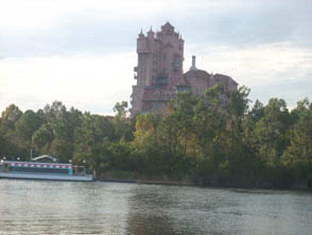
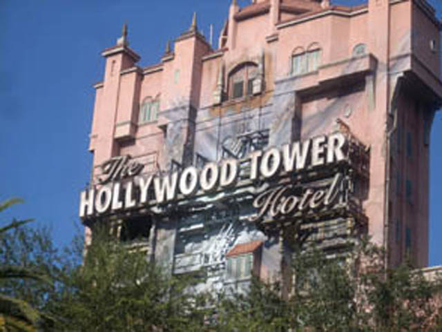

| |
Tower of Terror Review

We're here at the Disney World Resort where we'll reveiwing Tower of Terror. Disney World's Official Drop Tower. When you walk up to it, the first thing you notice is the gardens that surround it. So when you're waiting in line for it, it at least looks really nice. Then you head into the hotel lobby. The hotel lobby looks very well done and has a spooky theme to it. Then a cast member will assign you into the library. There, you will see a Twilight Zone Special on the Tower of Terror. Then you go into the Boiler Room. About 5 to 10 minutes later, you're standing in front of the elevator doors, waiting to board. Then the doors open, and to our joy, there's no hallway! We then board the car, fasten the seatbelt, and we're off. We first head up and see the haunted family in the hallway, only without any narration, so it's cooler that way. After the haunted family is struck by lightning, the hallway turns into space, but instead of dropping, the haunted family just fades into thin air. All that's left is a window. You just keep your faith in that window, then all of a sudden, it shatters. Then it gets all dark, and the narration starts. Then, the really cool thing starts. The 5th Dimension. We begin to move foreward as we go through the 5th Dimension! Take that California!! And then all of a sudden, a door out of nowhere opens up for us and we hear creepy music, clocks, and little girls singing. Then we get back in the dark and hear some more narration, then our drop sequence begins. But the great thing about Florida's is that there are four different drop settings!!! =) One of them is the California Program, one of them is really awesome and shoots you up first like a space shot, and I forget the other two. Then when it's all over, you see a hypno spiral and see a door, the haunted family, a clock and an eyeball all fall into it as it gets smaller and smaller. Eventually, it just turns off, and you turn around and go to the exit. This is the best Tower of Terror that I've ridden and I'm assuming is the best one of all. Paris' Tower is a clone of California's, and while Tokyo's looks cool, it doesn't seem quite as good as this Tower. I would totally recommend riding this if at Disney World as this ride kicks major ass!!
10/10
Location: Walt Disney World Resort
Opened: 1994
Built by: Disney
Last Ridden: November 24, 2007
Tower of Terror Photos



Home
|